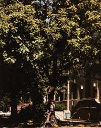
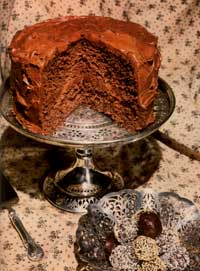

Carob: The Natural Sweet
September/October 1980
A wild foods expert reports on a nutritious treat that's better tasting-and much better for you-than chocolate.
By Christopher Nyerges
What do you do if you have an incurable sweet tooth, but you don't want to pollute your body with the sugary, cocoa-flavored candies, cakes, etc. that it craves? Well, "chocaholics", you can now take heart, because whenever your taste buds demand something sweet, feed them carob instead . . . it's a pure, unrefined food that can be easily substituted for chocolate (and for other processed sweets, as well).
If you've ever shopped in a natural foods store, you're probably already familiar with carob, which appears on the shelves in powder form and as an ingredient of candies and baked confections. Actually, the little bean pods have even more possibilities than you may realize . . . not only can they provide a tasty stand-in for chocolate and cocoa, but they're also a very nutritious food.
Carob is rich in protein, A and B vitamins, and such essential minerals as phosphorus and calcium. It's also much lower in fat and-especially because it's naturally sweet-in calories than chocolate or chocolate products. Furthermore, carob is nonallergenic . . . and doesn't contain theobromine, a stimulant which is present in chocolate.
IT GROWS ON TREES!
Although most folks think of carob as a flour, it's not derived from grain. The sweet is actually a powder, which is finely ground from the pods of the carob tree. Native to the Mediterranean region, Ceratonia siliqua also grows in the hot, arid climate of Arizona and southern California . . . where it often reaches a height of 50 feet. Spreading from a short, thick trunk, the evergreen produces a dense crown of glossy, dark leaves. Its numerous fruits-in the form of long, flat pods-each contains 10 to 16 small brown seeds in a sweet pulp. The leathery, strong-smelling seed cases can be gathered right from the tree (when they're ripe) and eaten raw . . . or ground into carob powder for use in baking.
The carob tree (it's sometimes called St. John's bread, locust bean, or honey locust . . . but don't confuse it with the true honey locust, Gleditsia triacanthos) has played a major role in man's diet since Biblical times. The pods of the hardy plant often nourished people during periods of starvation or warfare . . . and carob was widely used as a sweetener-because of its natural sugars-before the introduction of refined sucrose.
EAT 'EM "IN THE RAW"
Nowadays-although the use of processed carob powder for baking purposes is quite common-most people don't ever consider eating the raw pods. In fact, whenever I offer them to participants in my wild foods classes and workshops, the unanimous reaction is one of disbelief . . . and-often-distaste. A manufacturer of commercial carob powder even told me that-even though he considered them suitable for livestock feed-the pods required, in his opinion, complicated preparations in order to make them edible for humans!
On the other hand, I recently attended a wild foods dinner where the host served us a simple, delicious dessert: bite-sized pieces of broken Ceratonia husks, which we ate raw.
When you go foraging for carob pods, be careful not to choose green (immature) or moldy (overripe) specimens. Collect only the firm, lavender-brown seed cases-which ripen from late summer through early fall, but can be found year round-and dust off each one before you bite into it. As you chew, simply spit out the tiny, hard seeds which are inside the pods. You'll find that the leathery fruits are wonderfully sweet ... and they're easy to pack along, making carob pods an excellent snack food for hikers and cyclists.
POD INTO POWDER
If you're lucky enough to lay in a large store of the crunchy husks, you might like to grind your own carob powder as a low-cost alternative to the store-bought variety. To do this, you'll first need to remove the seeds. Wash the pods carefully and then steam them in a pressure cooker-at 15 pounds of pressure-for approximately 20 minutes. When the husks have cooled and dried off, they'll split open easily to release the seeds. (Don't discard those inedible nuggets, though . . . they can be softened in boiling water and used to make an attractive, natural necklace.) Finally, divide the seedless husks into small sections and process the pieces in a blender until they're ground into a fine, dark meal.
You can also make carob powder by using a rough stone mortar and pestle like those shown in the accompanying photo. Before you start, just crack open each pod (you'll probably have to use a pair of pliers to do so) and remove the seeds. Once the husks are empty, dry them over hot coals . . . or leave them in an oven, on the lowest heat setting, overnight. Then grind the cured pods thoroughly . . . and you'll produce a chocolate-flavored flour that's great when added to cakes, breads, and pancakes.
CAROB IN THE KITCHEN
Whether you grind it yourself or buy the commercially prepared mixture, you can substitute carob powder for chocolate and cocoa in just about any recipe. Simply use the same amount of carob as you would of cocoa, or-in a chocolate-based recipe-use three tablespoons of carob for each square of chocolate.
The "locust tree" fruit can even be used in place of sugar in all bread products (although it does give such foods a dark brown color). Carob is also an excellent flavoring to add to milkshakes, to baked beans . . . and even to barbecue sauces!
A "HONEY" OF A DESSERT
For your initial foray into the world of cooking with carob, try this delicious cake . . . it's a luscious torte that's almost guaranteed to convert you to the growing ranks of carob fans
Preheat the oven to 250°F and-while it's warming-beat together 1/2 cup of fresh, lightly salted butter . . . 1/2 cup of raw (preferably wild) honey . . . and 1/2 cup of unsulfured blackstrap molasses. When these ingredients are well blended, fold in one egg and stir the mixture well.
In a separate bowl, sift together 2 cups of stone-ground whole wheat flour and 1/3 cup of carob powder, 1/2 teaspoon of cinnamon, 1 teaspoon of baking soda, and 1/8 teaspoon of sea salt.
Then-using a total of 3/4 cup of hot water-alternately add the liquid and the dry ingredients to the butter/honey/molasses base. Finally, stir in one cup of chopped walnuts, and beat (with a wooden spoon) clockwise-"with feeling"-until the batter comes alive and gets almost fluffy.
Pour the cake mixture into a lightly greased 9" X 9" pan (or use a double recipe and round 9"-diameter pans to make a layer cake, like the one shown in the photo, if you prefer) and bake it for 1 to 1-1/2 hours, until the dark dessert is moist and has shrunk away from the sides of the container.
I like to serve the tasty cake with a frosting that's also flavored with carob, and will delight honey-lovers with its naturally sweet taste. To make the topping, cream 2 tablespoons of raw butter and 2/3 cup of powdered milk together with 1/3 cup of carob powder. Add 1/4 cup of honey, 4 tablespoons of raw cream, and 1 teaspoon of vanilla . . . then beat until the icing has a smooth, creamy texture. (You might want to double the recipe, to cover a layer cake, or just so you'll have plenty of frosting for the treat . . . even after the spoon-lickers and samplers have had their fill! )
OH, FUDGE!
Another rich-and tempting-dessert that can be made from carob is fudge . . . and the basic recipe requires nothing more than equal quantities of peanut butter, honey, and carob powder.
Melt 1/2 cup of peanut butter and 1/2 cup of honey-in a small saucepan-over low heat, until the mix is soft and gooey. Then remove it from the stove and slowly stir in 1/2 cup of carob powder.
Mold the mixture into small balls, and roll each one in whole sesame seeds or flaked coconut. As a variation (or if you'd prefer to make some traditional fudge squares), you can blend about 1/2 cup of chopped nuts or seeds into the melted batter . . . spread it in the bottom of a long pan . . . chill it . . . and cut the hardened dessert into squares.
Whether it's used in treats like the ones described in this article or in breads or other "everyday" cooking, carob always produces a superior natural flavor . . . a taste you'll want to try again! But even if you just chew on the raw pods of the Ceratonia tree, I'm sure you'll agree that carob isn't merely another overrated "wonder food". It's a nourishing and tasty way to satisfy your sweet tooth. . . without suffering the negative effects of refined sugar.
EDITOR'S NOTE: If you'd like to grind your own carob powder but don't have access to one of the husk-bearing trees, o you can order raw pods from The Surviv al Shop, Dept. TMEN, P.O. Box 42216, Los Angeles, California 90042. The dark brown fruits sell for $2.00 per pound . . . or $8.50 for a five-pound order.
 LEFT: The flat, leathery carob pods can be foraged and eaten directly off the tree... but you'll have to spit out the hard seeds that are inside! RIGHT: It's easy to make your own carob flour: Simply remove the seeds, then dry the husks over hot coals and grind them - using a stone mortar and pestle like those pictured here - into a fine, dark meal. |
 Ceratonia siliqua is a dense shade tree that reaches heights of up to 50 feet. Several thousands of pod-producing evergreens - such as this one - were planted in Pasadena schoolyards during teh Depression by Seventh Day Adventists... who hoped to provide a free, nutritious treat for schoolchildren. |
 Carob powder is a naturally delicious addition to many cake and candy recipes. |